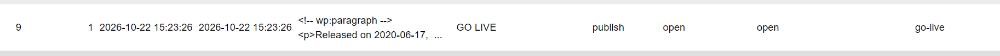

Project Overview
For this project, I was tasked with creating a structured collection of Stray Kids releases and transferring the information from a Google Sheet into WordPress. The collection organizes releases by album title, release date, release type, title track, year, number of tracks, rating, associated world tour, and release quarter.
The goal was to practice the process of modeling data, mapping it into WordPress's standard content structures, storing records in the database, retrieving records through Categories and Tags, and presenting the collection through a finished website.
1. STRUCTURE: Conceptual Data Model
I started by organizing the release information in a Google Sheet. Each row represents one release, and each column represents an attribute of that release. This made the information consistent before I entered it into WordPress.
My attributes included Album Title, Release Date, Release Type, Title Track, Year, Number of Tracks, Album Rating, Associated World Tour, and Quarter Release.
My original questions were:
- Which releases are Studio Albums?
- Which releases came out in 2021, regardless of release type?
2. MAP: Translating the Model into WordPress
I mapped each release to a standard WordPress Post. The album title became the Post title, and the Post content summarized the release date, title track, and number of tracks.
I used Categories for release type, such as Studio Album, Mini Album, Repackage, Special Album, and Single. I used Tags for information that could apply across different release types, including release year, album rating, associated world tour, and release quarter.
This approach let me use WordPress's built-in organization tools without creating a custom post type or installing a plugin.
3. STORE: Inspecting the Database
I inspected the WordPress database in phpMyAdmin and located one
of my releases in the wp_posts table. This connected
the information displayed on the website to the record stored
in the database.
Record inspected: GO LIVE
Database Post ID: 9


This section helped me see how websites like wordpress utilize SQL databases to manage content and make it easier to retrieve and present information. I recognized the post_author, which was admin, or myself editing the posts, and the post_date, which was the date I created the post. The post_content contained the release information I entered, and the post_title was the album title.
4. INTERACT: Working with the Collection
I entered the release records into WordPress and assigned the appropriate Categories and Tags. This created connections between individual releases and shared classifications.
Instead of manually building a separate page for every possible group of releases, I could use WordPress's built-in taxonomy features to organize the collection.
5. RETRIEVE: Testing Categories and Tags
I tested the taxonomy archives to check whether WordPress could retrieve related releases based on their classifications. The Studio Album Category addresses my first original question, while the 2021 Tag can help identify releases from that year across different release types.


These archives demonstrate how Categories and Tags support retrieval without requiring me to manually create a new list every time I want to view a subset of the collection.
6. PRESENT: The Finished Collection
The finished WordPress collection presents the releases as individual Posts that visitors can browse. Each Post provides information about a release, while Categories and Tags provide additional ways to explore related records.

Project Reflection
1. What was one important data-modeling or taxonomy decision you made?
One important decision was using Categories for release type and Tags for attributes that cut across release types. Fans in the space commonly use the classifications between studio albums and other types of album releases, so I wanted to make sure that information was easy to retrieve. I also wanted to make it possible to find releases from a specific year or with a specific rating, so I used Tags for those attributes. This decision balanced the need for a main classification with the flexibility to retrieve records based on other attributes.
2. What was one compromise you made when translating your Google Sheet into WordPress?
My Google Sheet represented each attribute in its own column, but standard WordPress Posts do not automatically provide a separate database field for every spreadsheet column. I used the Post title and content for the main release information, Categories for release type, and Tags for attributes such as year and rating. In doing so, I ended up putting the final date in the contents of the post rather than as a tag. I kept the year as the tag as well as classified by quarter, which is a compromise because it is not a dedicated field.
3. What did WordPress do for you that you otherwise would have needed to build yourself?
WordPress provided a system for storing and managing Posts, along with an administrative interface for entering and editing records. Its built-in Categories and Tags also generated archive pages for related content. Without WordPress, I would have needed to build or configure my own content-management interface, database operations, and retrieval logic to achieve similar functionality. The theme also gave the collection a consistent presentation without requiring me to code every individual release page from scratch.
4. Connect one concept from this project to something you've encountered elsewhere.
This project connected to my experience using Python and relational databases. In a spreadsheet, each release is a row with several attributes. In a database, records and relationships need to be structured so information can be stored and retrieved consistently. The WordPress taxonomy system also reminded me of using categories or grouping criteria in programming: a consistent classification makes it easier to select related items. The project helped me see how data-modeling decisions affect what users can retrieve from a finished application.
5. Return to your two original questions. Could your finished structure answer them?
Yes. The Studio Album Category can retrieve the releases classified as Studio Albums and the 2021 tag could retrieve releases assigned to that year regardless of their release type. These questions showed why it was useful to organize records by both a main classification and cross-cutting attributes. The answers depend on consistently assigning the correct Category and Tags to every relevant Post.
6. What would you model differently if you were starting the project again?
If I started again, I would likely change the group from Stray Kids to a group like Tomorrow X Together because they have more variation in their producers and directors for their music. It would give more substance to the overall collection rather than Stray Kids since the majority of their music is produced by members. I would also consider how to represent attributes such as release date, track count, and rating as dedicated fields rather than relying on Post content or Tags. Dedicated fields would make it easier to sort, validate, and filter records by specific values. Since this project uses standard WordPress structures, I had to balance that ideal model against the tools available without custom post types or plugins.
Supporting Files
The following resources document the original data model and the WordPress implementation.